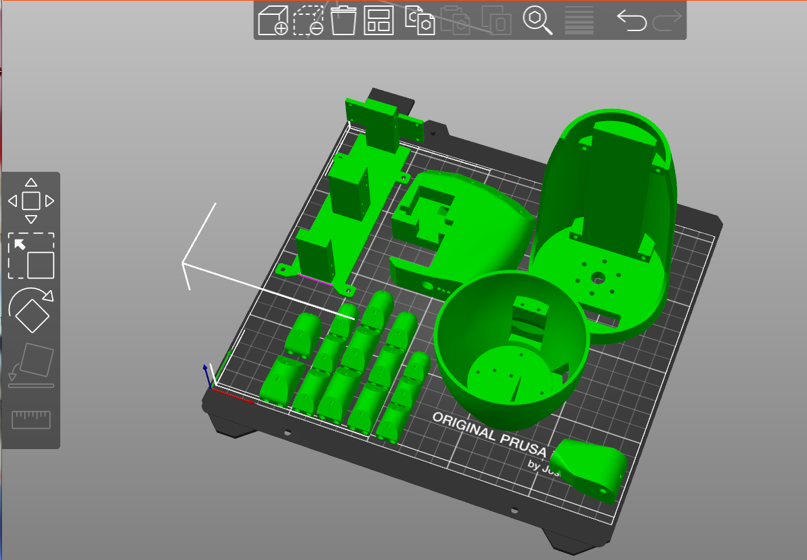
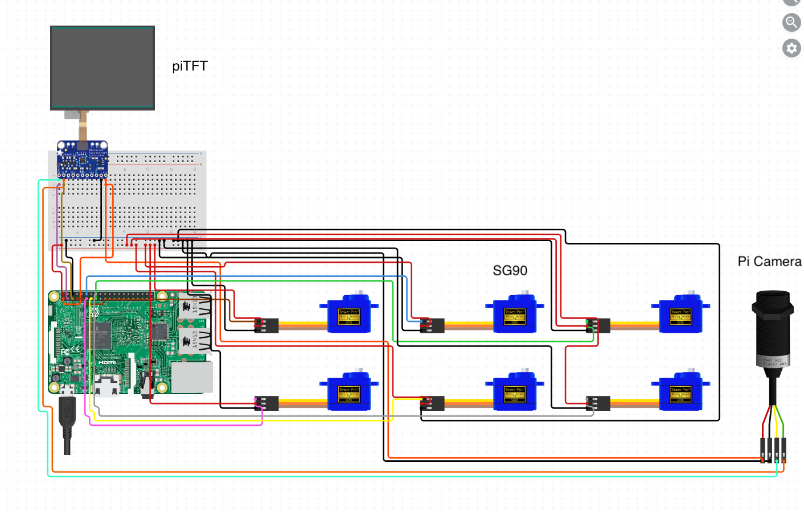

Awosome Robot Hand
Really Awesome 5725 Fall 2023
A Project By Hongyu Yao, Junhan Liu.
Demonstration Video
Introduction
Our Camera-Controlled Robot Arm project introduces a dynamic system capable of mirroring human hand movements in real-time. This innovative technology not only responds to gestures with precision but also allows users to program predefined movement sequences. This functionality opens doors to streamlined automation across various applications. In this brief overview, we'll explore the project's primary features, emphasizing its practical functionality in human-machine interaction and task automation.

Project Objective:
- Develop a robotic arm with a 3D-printed shell, optimizing for enhanced structural integrity and efficient servo layout.
- Create modular code supporting different servo configurations for flexible movement and implementing an efficient hand detection system.
- Enhance user experience through the design of an intuitive and user-friendly interface for controlling the robotic arm.
Design
Hardware
The robotic arm is crafted with precision using open-source 3D printing schematics, ensuring not only structural integrity but also a futuristic and mechanical appearance. Finger movements are controlled through innovative mechanisms involving fishing lines and elastic cords, with six SG90 servos providing meticulous control. Special attention has been given to the arrangement of motors, wires, and fishing lines to minimize interference during operation. The system is powered by a 32-bit Buster Raspberry Pi 4, equipped with a Picamera for live-stream hand movement capture and a PiTFT display for intuitive UI interaction.
Software
Finger Movement Control
Google Mediapipe is employed for precise hand landscape detection, providing coordinates for 21 hand joints within the detected hand box. Calculations for thumb rotation and curvature, as well as the bending angles of the remaining fingers, are derived from sophisticated algorithms. This ensures accurate replication of hand movements by the robotic arm.

- Thumb Rotation (rotate): Calculated by determining the sum of the angles formed by joints 4, 3, 2, and subtracting the sum of the angles formed by joints 3, 2, 1.
- Thumb Curvature (curve): Calculated by measuring the distance between fingertip joint 4 and the base joint 17 of the little finger.
- Remaining Four Fingers Bending: Calculated by the ratio of the distance between fingertip joint (varies per finger) and the base joint to the distance between interjoint and palm root.
User Interaction
The user interface, designed using Pygame, offers a seamless interaction experience. The main page includes sequence storage, virtual buttons (flip, play, manual, video), and physical buttons (add, delete, quit, play all). Actions can be easily added, deleted, or played, while the video display presents Pi camera images and hand wireframes for a comprehensive understanding of the system's performance. The manual control section allows users to precisely manipulate the robotic hand's movements through a simplified hand diagram, enhancing the versatility of the interaction.
Drawings


Testing
Initial Assembly
During the initial assembly phase, a meticulous manual test was conducted to rotate each servo individually, ensuring that the movement of each component remained unhindered. Python scripts utilizing pigpio were then employed to verify the seamless integration of the robotic hand with the Raspberry Pi 4, confirming its precise and intended movements.
Mediapipe Integration
In situations where deploying Mediapipe on the Raspberry Pi was not immediately feasible, a pragmatic approach involved testing with a laptop's webcam. The laptop ran the Mediapipe hand landscape detection model, and the detected hand landscape data was transmitted to the Raspberry Pi through Flask. This interim testing method ensured the project's continuous progression before full deployment on the Raspberry Pi.
Functional Validation
Upon completion of all components, the testing phase typically commenced with the manual page. This involved dragging each joint to confirm the proper functionality of each finger. This comprehensive step ensured that all aspects of the robotic hand, from mechanical components to software integration, were functioning seamlessly and as intended.
Result
Hardware Integration
The meticulous assembly and integration of hardware components proved successful, with manual tests confirming the free movement of individual parts without interference. The robotic hand demonstrated precise and intended motions when connected to the Raspberry Pi 4, validating the effectiveness of our hardware design and its compatibility with the control system.
Mediapipe Integration
The interim testing using a laptop's webcam for Mediapipe hand landscape detection showcased the flexibility of our approach during development. The seamless transmission of hand landscape data to the Raspberry Pi via Flask verified the successful integration of external components, ensuring that the hand movements detected off-device could be efficiently incorporated into our robotic system.
Software Interaction
The user-friendly interface, designed with Pygame, exhibited intuitive control during the manual testing phase. The accurate replication of hand movements by the robotic hand, as calculated by the algorithms based on detected hand joints, affirmed the successful implementation of our software control system.
Overall System Functionality
The comprehensive testing approach, covering both hardware and software aspects, yielded positive results. The robotic hand, capable of precise and responsive movements, met the project objectives, showcasing a successful fusion of mechanical design, hardware integration, and intelligent software control.
Work Distribution

Project group picture

Hongyu Yao
hy2238@cornell.edu
Designed the overall software architecture (Just being himself).

Junhan Liu
jl4254@cornell.edu
Implemented and tested the overall system.
Family Portrait

Parts List
- Raspberry Pi $35.00
- Raspberry Pi Camera V2 $25.00
- SG90 Servo - Provided in lab
Total: $60.00
References
PiCamera DocumentTower Pro Servo Datasheet
Bootstrap
Pigpio Library
R-Pi GPIO Document
Google Mediapipe Hand Landmarks Detection Guide
3D Printed Robotic Hand
Code Appendix
# camera_control.py
import subprocess
subprocess.run('sudo pigpiod', shell=True, check=True)
import mediapipe
import cv2
import pygame
from pygame.locals import * # for event MOUSE variables
import sys
import os
from flask import Flask
from flask import request
import json
import logging
import threading
import RPi.GPIO as GPIO
import time
import requests
from hand_display import main as manual_main
from Finger_Control_pigpio import process_data as process_data
from Finger_Control_pigpio import set_angle, coord_to_angle
from Finger_Control_pigpio import pi
import pigpio
# init and run flask
# block start ==============================================
app = Flask(__name__)
log = logging.getLogger("werkzeug")
log.setLevel(logging.ERROR)
test_data = []
data = json.dumps(test_data)
@app.route("/hand_landmark/", methods=["POST"])
def determine_escalation():
request_data = request.get_json()
requests = json.loads(request_data)
# stuff happens here that involves data to obtain a result
print(requests)
global data
# print(data)
return data
def run_flask_app():
app.run(host="0.0.0.0", port=5006)
flask_thread = threading.Thread(target=run_flask_app)
flask_thread.daemon = True
flask_thread.start()
# block end ==============================================
os.putenv("SDL_VIDEODRIVER", "fbcon") # Display on piTFT
os.putenv("SDL_FBDEV", "/dev/fb0")
os.putenv("SDL_MOUSEDRV", "TSLIB") # Track mouse clicks on piTFT
os.putenv("SDL_MOUSEDEV", "/dev/input/touchscreen")
# setup gpio
GPIO.setmode(GPIO.BCM)
def GPIO27_callback(channel):
global add_button
add_button = True
def GPIO22_callback(channel):
subprocess.Popen(["sudo", "killall", "pigpiod"])
global flag
flag = False
def GPIO23_callback(channel):
global delete_button
delete_button = True
def GPIO17_callback(channel):
global play_all
play_all = True
# physical quit button for gpio
GPIO.setup(22, GPIO.IN, pull_up_down=GPIO.PUD_UP)
GPIO.add_event_detect(22, GPIO.FALLING, callback=GPIO22_callback, bouncetime=300)
# physical add button for gpio
GPIO.setup(27, GPIO.IN, pull_up_down=GPIO.PUD_UP)
GPIO.add_event_detect(27, GPIO.FALLING, callback=GPIO27_callback, bouncetime=300)
# physical delete button for gpio
GPIO.setup(23, GPIO.IN, pull_up_down=GPIO.PUD_UP)
GPIO.add_event_detect(23, GPIO.FALLING, callback=GPIO23_callback, bouncetime=300)
# physical play all button for gpio
GPIO.setup(17, GPIO.IN, pull_up_down=GPIO.PUD_UP)
GPIO.add_event_detect(17, GPIO.FALLING, callback=GPIO17_callback, bouncetime=300)
# end setup gpio
# datastructure for gesture storage, if dict item is Null, the value is -1
gestureDict_path = "/home/pi/robotArm/temp/gesture.json"
gesture_number = 20
gesturePage = 0
defaultGesture = [179, 0, 179, 179, 179, 179]
gestureDict = {}
# init gesture json data as all -1
for i in range(gesture_number):
gestureDict[str(i)] = gestureDict.get(str(i), -1)
with open(gestureDict_path, 'w') as file:
json.dump(gestureDict, file, indent=2)
# setup flags
flag = True
show_hand = False
show_stack = True
show_joint = False
add_button = False
delete_button = False
play_all = False
play_button_clicked = False
# init and run Pygame
pygame.init()
# screen of pitft
screen_width = 320
screen_height = 240
screen = pygame.display.set_mode((screen_width, screen_height))
# parameters of stack block on stack screen
# start block ******************************************
# define block number and size
num_blocks = 10
block_width = screen_width // num_blocks
block_height = screen_height
# define color
font = pygame.font.Font(None, 15)
colors = [
(255, 242, 230),
(155, 210, 206),
(179, 226, 206),
(125, 196, 166),
(179, 226, 206),
(155, 210, 206),
(255, 242, 230),
(155, 210, 206),
(179, 226, 206),
(125, 196, 166)
]
# define Flip button's position and size
flip_width = 30
flip_height = 70
flip_x = screen_width - flip_width - 20
flip_y = screen_height - flip_height - 10
main_button_width = 50
main_button_height = 70
button_margin = 10
video_button_x = 200 - main_button_width - button_margin
video_button_y = screen_height - main_button_height - button_margin
manual_button_x = video_button_x - main_button_width - button_margin
manual_button_y = screen_height - main_button_height - button_margin
play_button_x = manual_button_x - main_button_width - button_margin
play_button_y = screen_height - main_button_height - button_margin
# setup background colors of stack screen
def initializeScreen():
# clean screen
screen.fill((255, 255, 255))
# paint color
for i in range(num_blocks):
block_color = colors[i % len(colors)]
block_rect = pygame.Rect(i * block_width, 0, block_width, block_height / 2)
pygame.draw.rect(screen, block_color, block_rect)
# draw Flip
pygame.draw.rect(screen, (0, 255, 0), (flip_x, flip_y, flip_width, flip_height))
button_text = pygame.transform.rotate(font.render("Flip", True, (0, 0, 0)), 90)
button_text_rect = button_text.get_rect(
center=(flip_x + flip_width // 2, flip_y + flip_height // 2)
)
screen.blit(button_text, button_text_rect)
# draw Video
pygame.draw.rect(
screen,
(241, 170, 50),
(video_button_x, video_button_y, main_button_width, main_button_height),
)
video_button_text = pygame.font.Font(None, 20).render(
"Video", True, (255, 255, 255)
)
video_button_text = pygame.transform.rotate(video_button_text, 90)
video_button_text_rect = video_button_text.get_rect(
center=(
video_button_x + main_button_width // 2,
video_button_y + main_button_height // 2,
)
)
screen.blit(video_button_text, video_button_text_rect)
# draw Manual
pygame.draw.rect(
screen,
(241, 170, 50),
(manual_button_x, manual_button_y, main_button_width, main_button_height),
)
manual_button_text = pygame.font.Font(None, 20).render(
"Manual", True, (255, 255, 255)
)
manual_button_text = pygame.transform.rotate(manual_button_text, 90)
manual_button_text_rect = manual_button_text.get_rect(
center=(
manual_button_x + main_button_width // 2,
manual_button_y + main_button_height // 2,
)
)
screen.blit(manual_button_text, manual_button_text_rect)
# draw Play
pygame.draw.rect(
screen,
(241, 170, 50),
(play_button_x, play_button_y, main_button_width, main_button_height),
)
play_button_text = pygame.font.Font(None, 20).render("Play", True, (255, 255, 255))
play_button_text = pygame.transform.rotate(play_button_text, 90)
play_button_text_rect = play_button_text.get_rect(
center=(
play_button_x + main_button_width // 2,
play_button_y + main_button_height // 2,
)
)
screen.blit(play_button_text, play_button_text_rect)
# update
pygame.display.flip()
# parameters for changing color of stack screen
color_resume = (255, 255, 255)
clicked = -1
clock = pygame.time.Clock()
start_time = time.time()
# end block *******************************************
# parameters of back button on hand screen
button_width = 40
button_height = 80
button_x = 10 # back button
button_y = screen_height - button_height - 10 # back button
hand_font = pygame.font.Font(None, 24)
drawingModule = mediapipe.solutions.drawing_utils
handsModule = mediapipe.solutions.hands
cap = cv2.VideoCapture(0)
fourcc = cv2.VideoWriter_fourcc("m", "p", "4", "v")
with handsModule.Hands(
static_image_mode=False,
min_detection_confidence=0.7,
min_tracking_confidence=0.7,
max_num_hands=1,
) as hands:
while flag:
ret, frame = cap.read()
flipped = cv2.flip(frame, flipCode=-1)
frame1 = cv2.resize(flipped, (640, 480))
results = hands.process(cv2.cvtColor(frame1, cv2.COLOR_BGR2RGB))
if results.multi_hand_landmarks is not None:
for handLandmarks in results.multi_hand_landmarks:
drawingModule.draw_landmarks(
frame1, handLandmarks, handsModule.HAND_CONNECTIONS
)
result_dic = []
for j in handLandmarks.landmark:
joint_list = [round(j.x, 4), round(j.y, 4), 0, 0]
result_dic.append(joint_list)
if result_dic:
data = json.dumps(result_dic, indent=4)
if data is not None:
process_data(data)
if show_hand:
frame1 = cv2.cvtColor(frame1, cv2.COLOR_BGR2RGB)
pygame_frame = pygame.surfarray.make_surface(frame1)
screen.fill((0, 0, 0))
screen.blit(pygame_frame, (0, 0))
# draw Back button
pygame.draw.rect(
screen, (255, 0, 0), (button_x, button_y, button_width, button_height)
)
button_text = pygame.transform.rotate(
hand_font.render("Back", True, (255, 255, 255)), 90
)
button_text_rect = button_text.get_rect(
center=(button_x + button_width // 2, button_y + button_height // 2)
)
screen.blit(button_text, button_text_rect)
# function of add button
if add_button:
print("add button pressed")
with open(gestureDict_path, "r") as f:
gestureDict = json.load(f)
add_gesture = -1
for i in range(gesture_number):
if gestureDict.get(str(i), -1) == -1:
add_gesture = i
# print("NONE")
break
# print(add_gesture)
# if add too much gesture, render a hint not too add more
if add_gesture == -1:
text_surface = pygame.transform.rotate(
hand_font.render(
"adding too much, delete first", True, (255, 0, 0)
),
90,
)
text_rect = text_surface.get_rect(
center=(screen_width // 2, screen_height // 2)
)
screen.blit(text_surface, text_rect)
pygame.display.flip()
time.sleep(2)
else:
conv = ["hand show request for data"]
s = json.dumps(conv)
data_add = requests.post(
"http://0.0.0.0:5006/hand_landmark/", json=s
).json()
if data_add:
gestureDict[str(add_gesture)] = data_add
render_text = "Successfully Added Gesture " + str(add_gesture)
text_surface = pygame.transform.rotate(
hand_font.render(render_text, True, (0, 255, 0)),
90,
)
text_rect = text_surface.get_rect(
center=(screen_width // 2, screen_height // 2)
)
screen.blit(text_surface, text_rect)
pygame.display.flip()
time.sleep(1)
with open(gestureDict_path, "w") as file:
json.dump(gestureDict, file, indent=2)
else:
render_text = "Invalid Data"
text_surface = pygame.transform.rotate(
hand_font.render(render_text, True, (255, 0, 0)),
90,
)
text_rect = text_surface.get_rect(center=(screen_width // 2, screen_height // 2))
screen.blit(text_surface, text_rect)
pygame.display.flip()
time.sleep(1)
add_button = False
for event in pygame.event.get():
if event.type == pygame.QUIT:
pygame.quit()
sys.exit()
elif event.type is MOUSEBUTTONDOWN:
mouse_x, mouse_y = event.pos
if (
button_x <= mouse_x <= button_x + button_width
and button_y <= mouse_y <= button_y + button_height
):
print("Back Button Clicked")
# show another page
show_hand = False
show_stack = True
if show_stack:
initializeScreen()
# function of play all button
if play_all:
print("play all")
time.sleep(0.5)
with open(gestureDict_path, "r") as f:
gestureDict = json.load(f)
for i in range(gesture_number):
move = gestureDict.get(str(i), -1)
if move != -1:
if len(move) > 7:
set_angle(coord_to_angle(move))
else:
set_angle(move)
time.sleep(1)
text_surface = pygame.transform.rotate(
font.render("Play All Gestures Finised", True, (0, 0, 255)),
90,
)
text_rect = text_surface.get_rect(center=(screen_width // 2, screen_height // 2))
screen.blit(text_surface, text_rect)
pygame.display.flip()
time.sleep(2)
play_all = False
# function of add button
if add_button:
print("add button pressed")
with open(gestureDict_path, "r") as f:
gestureDict = json.load(f)
add_gesture = -1
for i in range(gesture_number):
if gestureDict.get(str(i), -1) == -1:
add_gesture = i
# print("NONE")
break
# print(add_gesture)
# if add too much gesture, render a hint not too add more
if add_gesture == -1:
text_surface = pygame.transform.rotate(
font.render("adding too much, delete first", True, (255, 0, 0)),
90,
)
text_rect = text_surface.get_rect(
center=(screen_width // 2, screen_height // 2)
)
screen.blit(text_surface, text_rect)
pygame.display.flip()
time.sleep(2)
else:
conv = ["gesture stack request for data"]
s = json.dumps(conv)
data_add = requests.post(
"http://0.0.0.0:5006/hand_landmark/", json=s
).json()
if data_add:
gestureDict[str(add_gesture)] = data_add
render_text = "Successfully Added Gesture " + str(add_gesture)
text_surface = pygame.transform.rotate(
hand_font.render(render_text, True, (0, 255, 0)),
90,
)
text_rect = text_surface.get_rect(center=(screen_width // 2, screen_height // 2))
screen.blit(text_surface, text_rect)
pygame.display.flip()
time.sleep(1)
with open(gestureDict_path, "w") as file:
json.dump(gestureDict, file, indent=2)
else:
render_text = "Invalid Data"
text_surface = pygame.transform.rotate(
hand_font.render(render_text, True, (255, 0, 0)),
90,
)
text_rect = text_surface.get_rect(center=(screen_width // 2, screen_height // 2))
screen.blit(text_surface, text_rect)
pygame.display.flip()
time.sleep(1)
add_button = False
# function of delete button
if delete_button:
print("delete button pressed")
with open(gestureDict_path, "r") as f:
gestureDict = json.load(f)
if colors[clicked] == (255, 255, 255):
# print("deleting you!", clicked)
delete_item = (gesture_number // 2) * gesturePage + clicked
for i in range(delete_item, gesture_number):
gestureDict[str(i)] = gestureDict.get(str(i + 1), -1)
# print(i, gestureDict[str(i)])
colors[clicked] = color_resume
with open(gestureDict_path, "w") as file:
json.dump(gestureDict, file, indent=2)
delete_button = False
# touchscreen to change the color of the block and get the want to be changed number
current_time = time.time()
if current_time - start_time >= 10 and clicked != -1:
colors[clicked] = color_resume
for event in pygame.event.get():
if event.type is MOUSEBUTTONDOWN:
pos = pygame.mouse.get_pos()
x, y = pos
if (
play_button_x <= x <= play_button_x + main_button_width
and play_button_y <= y <= play_button_y + main_button_height
):
print("Play Button Clicked")
play_button_clicked = True
time.sleep(0.5)
with open(gestureDict_path, "r") as f:
gestureDict = json.load(f)
# print(colors[clicked])
if colors[clicked] == (255, 255, 255):
# print("play it!", clicked)
played_item = (gesture_number // 2) * gesturePage + clicked
played_gesture = gestureDict.get(str(played_item), -1)
if played_gesture == -1:
if len(defaultGesture) > 7:
set_angle(coord_to_angle(defaultGesture))
else:
set_angle(defaultGesture)
play_button_clicked = False
# default gesture
else:
if len(played_gesture) > 7:
# print(played_gesture)
# print(type(played_gesture))
set_angle(coord_to_angle(played_gesture))
else:
played_gesture = [int(item) for item in played_gesture]
# print(played_gesture)
# print(type(played_gesture))
set_angle(played_gesture)
play_button_clicked = False
# played_gesture
time.sleep(0.01)
colors[clicked] = color_resume
if clicked != -1:
# print(play_button_clicked)
colors[clicked] = color_resume
elif event.type is MOUSEBUTTONUP:
pos = pygame.mouse.get_pos()
x, y = pos
# print('current position is ', x, y)
if y < 120:
clicked = x // block_width
print("clicking the ", clicked)
color_resume = colors[clicked]
colors[clicked] = (255, 255, 255)
start_time = time.time()
elif (
flip_x <= x <= flip_x + flip_width
and flip_y <= y <= flip_y + flip_height
):
print("click flip")
if gesturePage == 0:
gesturePage = 1
else:
gesturePage = 0
elif (
video_button_x <= x <= video_button_x + main_button_width
and video_button_y <= y <= video_button_y + main_button_height
):
print("Video Button Clicked")
show_stack = False
show_joint = False
show_hand = True
elif (
manual_button_x <= x <= manual_button_x + main_button_width
and manual_button_y <= y <= manual_button_y + main_button_height
):
print("Manual Button Clicked")
show_joint = True
show_hand = False
show_stack = False
# play selected gesture
# find key in gesture diction, if the gesture is None, fill with default gesture
with open(gestureDict_path, "r") as f:
gestureDict = json.load(f)
for i in range(num_blocks):
block_x = i * block_width
j = gesturePage * (gesture_number // 2) + i
gesture = gestureDict.get(str(j), -1)
text_to_show = ""
# to be modified ################################################### send gesture data to hand
if gesture != -1:
text_to_show = "GESTURE" + str(j)
else:
text_to_show = "# DEFAULT"
text_surface = pygame.transform.rotate(
font.render(text_to_show, True, (0, 0, 0)), 90
)
text_rect = text_surface.get_rect(
center=(block_x + block_width // 2, screen_height // 4)
)
screen.blit(text_surface, text_rect)
if show_joint:
show_joint = manual_main()
show_stack = True
show_hand = False
pygame.display.flip()
pygame.time.Clock().tick(30)
# Finger_Control_pigpio.py
import sys
import RPi.GPIO as GPIO
import time
import numpy as np
import math
from flask import Flask
from flask import request, g
import json
import threading
import logging
from queue import Queue
import requests
# GPIO.setmode(GPIO.BCM)
# GPIO.setup(22, GPIO.IN, pull_up_down=GPIO.PUD_UP)
import heapq
import pigpio
import subprocess
data = None
# subprocess.call('sudo pigpiod', shell=True)
# subprocess.Popen(["sudo", "pigpiod"])
# Connect to the pigpio daemon
pi = pigpio.pi()
if not pi.connected:
print("Unable to connect to pigpio daemon.")
exit()
# ratio_above = [-1,-1,-1,-1,-1]
# ratio_below = [-1,-1,-1,-1,-1]
# ratio_above =[0.8971048551609604, 0.8954669333844456, 0.9998759579498151, 1.0368234362768092, 0.9765926489672645]
# ratio_below =[0.8001693907401342, 0.1749117834033477, 0.19303624173106138, 0.29275206567100726, 0.42182779670142717]
ratio_above = [
1.0316524181500226,
0.8954669333844456,
0.9998759579498151,
1.0368234362768092,
0.9765926489672645,
]
ratio_below = [
0.8001693907401342,
0.38944473659975983,
0.200062642108565,
0.29275206567100726,
0.42182779670142717,
]
# thumb_ratio = [9999,-1] #min,max
# thumb_ratio = [0.6997189498609505, 1.3314314498941338]
thumb_ratio = [0.2835444150171337, 0.5]
# Set the GPIO pin for the servo
############## ##############
# finger0 -> GPIO 16 (rotate the finger1)
# finger1 -> GPIO 5
# finger2 -> GPIO 6
# finger3 -> GPIO 13
# finger4 -> GPIO 19
# finger5 -> GPIO 26
pins = [16, 5, 6, 13, 19, 26]
# Set the PWM frequency (usually around 50 Hz)
for pin in pins:
pi.set_mode(pin, pigpio.OUTPUT)
pi.set_PWM_frequency(pin, 50)
# Set the initial position of the servo
initial_position = [0, 0, 0, 0, 0, 0]
initial_position[0] = 130 # In degrees (range: 110 - 180)
initial_position[1] = 90
initial_position[2] = 90
initial_position[3] = 90
initial_position[4] = 90
initial_position[5] = 90
def cosin_angle(x1, y1, x2, y2, x3, y3):
dot_product = (x2 - x1) * (x3 - x2) + (y2 - y1) * (y3 - y2)
length_v1 = math.sqrt((x2 - x1) ** 2 + (y2 - y1) ** 2)
length_v2 = math.sqrt((x3 - x2) ** 2 + (y3 - y2) ** 2)
cos_theta = dot_product / (length_v1 * length_v2)
angle_rad = math.acos(cos_theta)
angle_deg = min(180, math.degrees(angle_rad))
return 180 - angle_deg
def set_angle(angle):
if angle is None or angle == False:
return False
# angle 0 is [110,180]
# angle 1 is [0,120]
angle[0] = min(max(angle[0], 110), 180)
angle[1] = min(max(angle[1], 0), 120)
calculated_angle = angle
for i in range(2, 6):
calculated_angle[i] = max(calculated_angle[i], 0)
calculated_angle[i] = min(calculated_angle[i], 180)
# calculate and store the dutycycle
duty_cycle = []
duty_cycle.append(
((180 - calculated_angle[0]) / 0.09) + 500
) # Map angle (0-180 degrees) to duty cycle (2-12), 2 could be changed to 2.5
duty_cycle.append(((180 - calculated_angle[1]) / 0.09) + 500)
duty_cycle.append((calculated_angle[2] / 0.09) + 500)
duty_cycle.append((calculated_angle[3] / 0.09) + 500)
duty_cycle.append(((180 - min(170, calculated_angle[4])) / 0.09) + 500)
duty_cycle.append(((180 - calculated_angle[5]) / 0.09) + 500)
# change the pwm and set the dutycycle
for i in range(6):
pi.set_servo_pulsewidth(pins[i], duty_cycle[i])
def get_ratio(data):
coordinates = data
flag_presence = True
for i in range(21):
if coordinates[i][3] != 0:
flag_presence = False
if flag_presence == False:
print("Not all points are in the camera!")
return False
# get coodinates for specific joints
# coord=[x,y,visibility,presence]
coord_whist = coordinates[0]
# get the coordinates of each finger
finger_index = [4, 8, 12, 16, 20]
coord_finger = [coordinates[i] for i in finger_index]
# [x,y,v,p]
# get the coordinates of each joint
joint_index = [2, 5, 9, 13, 17]
coord_joint = [coordinates[i] for i in joint_index]
# get the distance from wrist to each finger
distance_to_f = [get_distance(coord_whist, coord_finger[i]) for i in range(5)]
# get the distance from wrist to each joint
distance_to_j = [get_distance(coord_whist, coord_joint[i]) for i in range(5)]
# get the distance from joint to each finger
distance_jf = [get_distance(coord_finger[i], coord_joint[i]) for i in range(5)]
distance_thumb = distance_from_point_to_line(
coord_joint[4], coord_whist, coord_joint[0]
)
Ratio = [
[0, 0],
[0, 0],
[0, 0],
[0, 0],
[0, 0],
[0, 0],
] # [1-5 is finger ratio, 6 is thumb ratio]
Ratio[5][0] = distance_thumb / distance_to_j[4] # this is thumb distance
for i in range(5):
if distance_to_f[i] >= distance_to_j[i]:
Ratio[i][0] = 1 # [0 -> above, 1 -> below]
else:
Ratio[i][0] = 0
Ratio[i][1] = distance_jf[i] / distance_to_j[i]
return Ratio
def get_max_ratio(Ratio):
global ratio_above, ratio_below, thumb_ratio
for i in range(5):
if Ratio[i][0] == 1:
ratio_above[i] = max(ratio_above[i], Ratio[i][1])
else:
ratio_below[i] = max(ratio_below[i], Ratio[i][1])
thumb_ratio[0] = min(Ratio[5][0], thumb_ratio[0])
thumb_ratio[1] = max(Ratio[5][0], thumb_ratio[1])
def get_distance(coord1, coord2):
x1 = coord1[0]
y1 = coord1[1]
x2 = coord2[0]
y2 = coord2[1]
return math.sqrt((x1 - x2) * (x1 - x2) + (y1 - y2) * (y1 - y2))
def distance_from_point_to_line(x, y, z): # from z to xy
x1, y1, _, _ = x
x2, y2, _, _ = y
x3, y3, _, _ = z
numerator = abs((x3 - x1) * (y2 - y1) - (x2 - x1) * (y3 - y1))
denominator = math.sqrt((x2 - x1) ** 2 + (y2 - y1) ** 2)
distance = numerator / denominator
return distance
def coord_to_angle(data): # input:data, Output: angle
# handness=HandLandmarkerResult[0]
# if handness['display_name'] != 'Left':
# print('Left hand not detected!')
# return False
if data is None or data == False:
return False
# get the set of coordinates
# hand_landmarks=HandLandmarkerResult[1]
# coordinates = hand_landmarks[0]
global ratio_above, ratio_below
coordinates = data
# check every point is in the camera
flag_presence = True
for i in range(21):
if coordinates[i][3] != 0:
flag_presence = False
if flag_presence == False:
print("Not all points are in the camera!")
return False
# get coodinates for specific joints
# coord=[x,y,visibility,presence]
coord_whist = coordinates[0]
# get the coordinates of each finger
finger_index = [4, 8, 12, 16, 20]
coord_finger = [coordinates[i] for i in finger_index]
# [x,y,v,p]
angle1 = cosin_angle(
coordinates[1][0],
coordinates[1][1],
coordinates[2][0],
coordinates[2][1],
coordinates[3][0],
coordinates[3][1],
)
angle2 = cosin_angle(
coordinates[2][0],
coordinates[2][1],
coordinates[3][0],
coordinates[3][1],
coordinates[4][0],
coordinates[4][1],
)
# get the coordinates of each joint
joint_index = [2, 5, 9, 13, 17]
coord_joint = [coordinates[i] for i in joint_index]
# get the distance from wrist to each finger
distance_to_f = [get_distance(coord_whist, coord_finger[i]) for i in range(5)]
# get the distance from wrist to each joint
distance_to_j = [get_distance(coord_whist, coord_joint[i]) for i in range(5)]
# get the distance from joint to each finger
distance_jf = [get_distance(coord_finger[i], coord_joint[i]) for i in range(5)]
distance_thumb = distance_from_point_to_line(
coord_joint[4], coord_whist, coord_joint[0]
)
ratio_thumb = distance_thumb / distance_to_j[4]
# print('ratio thumb = ', ratio_thumb)
# print('')
# print('ratio above = ',ratio_above)
# print('ratio below = ',ratio_below)
# print(' ')
Angle = [0, 0, 0, 0, 0, 0]
Angle_threshold = [180, 120, 150, 120, 70, 110] # [1-5,thumb]
# calcualte angle of finger 2
for i in range(5):
ratio = distance_jf[i] / distance_to_j[i]
# if finger above joint
if distance_to_f[i] >= distance_to_j[i]:
Angle[i + 1] = Angle_threshold[i] * (1 - ratio / ratio_above[i])
else:
Angle[i + 1] = (180 - Angle_threshold[i]) * (
1 - min(1, ratio / ratio_below[i])
) + Angle_threshold[i]
Angle[0] = Angle_threshold[5] + (180 - Angle_threshold[5]) * (
thumb_ratio[1] - ratio_thumb
) / (thumb_ratio[1] - thumb_ratio[0])
total_angle = angle1 + angle2
Angle[1] = 120 - ((total_angle - 240))
print(Angle[1])
return Angle
def find_median(nums):
min_heap = []
max_heap = []
for num in nums:
heapq.heappush(max_heap, -num)
while len(max_heap) > len(min_heap):
heapq.heappush(min_heap, -heapq.heappop(max_heap))
if len(min_heap) == len(max_heap):
return (min_heap[0] - max_heap[0]) / 2
else:
return min_heap[0]
def call_data():
global data
while 1:
conv = ["request for data"]
s = json.dumps(conv)
data = requests.post("http://0.0.0.0:5003/hand_landmark/", json=s).json()
print(data[0][0])
# 1 means run
# 0 means test
flag_state = 1
######################### MAIN FUNCTION ################################
def _main():
th = threading.Thread(target=call_data)
th.daemon = True
set_angle(initial_position)
time.sleep(1)
try:
while True:
if flag_state == 0:
while not data:
print("waiting for data")
time.sleep(1)
Ratio = []
start_time = time.time()
print("=============TEST START==============")
while time.time() - start_time <= 10:
Ratio = get_ratio(data)
get_max_ratio(Ratio)
print("=============TEST END==============")
# print('ratio above : ',ratio_above)
# print('')
# print('ratio below : ',ratio_below)
# print('')
# print('thumb ratio ', thumb_ratio)
continue
if flag_state == 1:
print("waiting for data")
th.start()
while not data:
time.sleep(0.01)
print("==============START RUNNING==============")
# create a queue to store data
data_queue = Queue()
queue_size = 5
while 1:
if data_queue.qsize() < queue_size: # store 5 images
data_queue.put(data)
continue
###################################### FILTER #####################################################
# put the current image and do the filter
data_pop = data_queue.get() # get and pop the first data
datas = []
for i in range(queue_size - 1):
datas.append(data_queue.get())
datas.append(data)
#
filtered_data = []
for index in range(21):
cur_x = []
cur_y = []
for data in datas:
cur_x.append(data[index][0])
cur_y.append(data[index][1])
mid_x = find_median(cur_x)
mid_y = find_median(cur_y)
filtered_data.append([mid_x, mid_y, 0, 0])
# print(filtered_data)
for data in datas: #
data_queue.put(data)
###################################################################################################
target_position = coord_to_angle(filtered_data)
if target_position == False:
continue
# print(target_position)
set_angle(target_position)
time.sleep(0.01) # Wait for the0 servos to move
# if not GPIO.input(22):
# print('===============END RUNNING===============')
# break
continue
# change frequency (cannot use currently)
if angles_input == "chf":
ch_ferq = input("Please enter the frequency")
# ChangeFreq(int(ch_ferq))
continue
# test the finger
if angles_input == "test":
angle = 0
for i in range(180):
set_angle(angle, angle, angle, angle, angle, angle)
time.sleep(0.02)
angle += 1
for i in range(180):
set_angle(angle, angle, angle, angle, angle, angle)
time.sleep(0.02)
angle -= 1
continue
target_position = []
if len(angles) == 6:
target_position[0] = int(angles[0].strip())
target_position[1] = int(angles[1].strip())
target_position[2] = int(angles[2].strip())
target_position[3] = int(angles[3].strip())
target_position[4] = int(angles[4].strip())
target_position[5] = int(angles[5].strip())
set_angle(
target_position[0],
target_position[1],
target_position[2],
target_position[3],
target_position[4],
target_position[5],
)
time.sleep(1) # Wait for the0 servos to move
elif len(angles) == 1:
target_position_all = int(angles[0].strip())
set_angle(
target_position_all,
target_position_all,
target_position_all,
target_position_all,
target_position_all,
target_position_all,
)
time.sleep(1) # Wait for the servos to move
elif len(angles) == 2: # input (num,angle)
num = int(angles[0].strip())
target_angle = int(angles[1].strip())
target_position = [0, 0, 0, 0, 0, 0]
target_position[num] = target_angle
set_angle(target_position)
time.sleep(1) # Wait for the0 servos to move
else:
print("Please enter exactly six angles separated by commas.")
except KeyboardInterrupt:
pass
finally:
# Clean up and reset the GPIO
th.join()
pi.stop()
GPIO.cleanup()
# by default, the data is valid
data_queue = Queue()
def process_data(data):
data = json.loads(data)
global initial_position, flag_state
global data_queue
queue_size = 5
if flag_state == 0:
Ratio = []
start_time = time.time()
print("=============TEST START==============")
while time.time() - start_time <= 10:
Ratio = get_ratio(data)
get_max_ratio(Ratio)
print("=============TEST END==============")
return
if flag_state == 1:
# print('==============START RUNNING==============')
# print('')
# print(len(data))
if not data or data == None:
return
if data_queue.qsize() < queue_size: # store 5 images
data_queue.put(data)
print("Creating Queue")
return
###################################### FILTER #####################################################
# put the current image and do the filter
data_pop = data_queue.get() # get and pop the first data
datas = []
for i in range(queue_size - 1):
datas.append(data_queue.get())
datas.append(data)
#
filtered_data = []
for index in range(21):
cur_x = []
cur_y = []
for data in datas:
cur_x.append(data[index][0])
cur_y.append(data[index][1])
mid_x = find_median(cur_x)
mid_y = find_median(cur_y)
filtered_data.append([mid_x, mid_y, 0, 0])
for data in datas: #
data_queue.put(data)
###################################################################################################
target_position = coord_to_angle(filtered_data)
if target_position == False or target_position is None:
return
set_angle(target_position)
time.sleep(0.01) # Wait for the0 servos to move
# Clean up and reset the GPIO
return
# hand_display.py
import sys
import json
import subprocess
subprocess.run("sudo pigpiod", shell=True, check=True)
import pygame
import time
from pygame.locals import * # for event MOUSE variables
import os
import RPi.GPIO as GPIO
import copy
from Finger_Control_pigpio import set_angle, pi
import pigpio
os.putenv("SDL_VIDEODRIVER", "fbcon") # Display on piTFT
os.putenv("SDL_FBDEV", "/dev/fb0")
os.putenv("SDL_MOUSEDRV", "TSLIB") # Track mouse clicks on piTFT
os.putenv("SDL_MOUSEDEV", "/dev/input/touchscreen")
# flags
add_button = False
pygame.init()
# subprocess.Popen(["sudo", "pigpiod"])
# Set up the Pygame window
screen_size = (320, 240)
screen = pygame.display.set_mode(screen_size)
pygame.display.set_caption("Hand Drawing")
black = (0, 0, 0)
white = (255, 255, 255)
red = (255, 0, 0)
blue = (0, 0, 255)
# draw add button
screen_width = 320
screen_height = 240
button_size = 50
button_rect = pygame.Rect(
screen_width - button_size, screen_height - button_size, button_size, button_size
)
def rotate(coord):
x = coord[0]
y = coord[1]
return y, 240 - x
# set the initial coordinate
joint_coord = [[180, 220], [100, 100], [140, 100], [180, 100], [220, 100]]
palm_coord = [[50, 220], [100, 160], [140, 160], [180, 160], [220, 160]]
finger_coord = [[120, 180], [20, 140], [20, 100], [20, 60], [20, 20]]
def is_point_valid(point, center, radius):
return (point[0] - center[0]) ** 2 + (point[1] - center[1]) ** 2 <= radius**2
# Set initial coordinates for draggable points
draggable_points = copy.copy(finger_coord)
draggable_points.append(joint_coord[0])
flag_down = False
# f0 #finger1 #finger2 finger3 finger4 #joint0
range_constraint = [
[],
[[20, 200], [120, 160]],
[[20, 200], [80, 120]],
[[20, 200], [40, 80]],
[[20, 200], [0, 40]],
[[160, 200], [160, 220]],
]
range_constraint[0] = [
[draggable_points[5][0] - 60, draggable_points[5][0] + 40],
[draggable_points[5][1] - 60, draggable_points[5][1] - 20],
]
def is_in_constraint(x, y, i):
if x in range(range_constraint[i][0][0], range_constraint[i][0][1]) and y in range(
range_constraint[i][1][0], range_constraint[i][1][1]
):
return True
else:
return False
def calculate_angle(
x, s0, s1, r0, r1
): # current value, current window(s0,s1),degree window(r0,r1) 0-180
return ((x - s0)) * (r1 - r0) / (s1 - s0) + r0
def is_point_in_rect(point, rect):
x, y = point
return rect.left <= x <= rect.right and rect.top <= y <= rect.bottom
# Main game loop
def main():
global add_button
selected_point = -1
deg = [0, 0, 0, 0, 0, 0]
finish_button_rect = pygame.Rect(10, 180, 30, 100)
global flag_down
Finish_status = False
while not Finish_status:
for event in pygame.event.get():
if event.type == pygame.QUIT:
pygame.quit()
sys.exit()
elif event.type == pygame.MOUSEBUTTONDOWN:
# Check if any draggable point is clicked
flag_down = True
for i, point in enumerate(draggable_points):
if is_point_valid(event.pos, point, 20):
selected_point = i
# Check if the finish button is clicked
if is_point_in_rect(event.pos, finish_button_rect):
print("Finish button clicked.")
Finish_status = True
if button_rect.collidepoint(event.pos):
print("Button Clicked!")
add_button = True
elif flag_down and event.type == pygame.MOUSEMOTION and selected_point >= 0:
# Update the position of the selected draggable point
if is_in_constraint(event.pos[0], event.pos[1], selected_point):
if selected_point == 5: # if the current point is joint0
draggable_points[selected_point] = (180, event.pos[1])
# update the y axis of finger 1
draggable_points[0] = (
draggable_points[0][0],
draggable_points[selected_point][1] - 40,
)
# update the constraint for finger 1
range_constraint[0] = [
[draggable_points[5][0] - 60, draggable_points[5][0] + 40],
[draggable_points[5][1] - 60, draggable_points[5][1] - 20],
]
else:
draggable_points[selected_point] = (
event.pos[0],
(
range_constraint[selected_point][1][0]
+ range_constraint[selected_point][1][1]
)
/ 2,
)
elif event.type == pygame.MOUSEBUTTONUP:
flag_down = False
selected_point = -1
# Clear the screen
screen.fill(white)
# Draw the palm
pygame.draw.line(
screen, black, rotate([100, 160]), rotate([220, 160]), 3
) # Thumb
pygame.draw.line(
screen, black, rotate([220, 160]), rotate([220, 300]), 3
) # Index finger
pygame.draw.line(
screen, black, rotate([220, 300]), rotate([100, 300]), 3
) # Middle finger
pygame.draw.line(
screen, black, rotate([100, 300]), rotate([50, 220]), 3
) # Ring finger
pygame.draw.line(
screen, black, rotate([50, 220]), rotate([100, 160]), 3
) # Pinky finger
# Draw the finger points
for coord in draggable_points:
pygame.draw.circle(screen, red, (round(coord[0]), round(coord[1])), 10)
# Draw the joint
pygame.draw.circle(screen, blue, draggable_points[5], 10)
for coord in joint_coord[1:]:
pygame.draw.circle(screen, black, rotate(coord), 7)
# Draw the palm point
for coord in palm_coord:
pygame.draw.circle(screen, black, rotate(coord), 7)
# connect all these point
for i in range(1, 5):
pygame.draw.line(
screen, black, rotate(palm_coord[i]), rotate(joint_coord[i]), 3
)
for i in range(1, 5):
pygame.draw.line(
screen, black, rotate(joint_coord[i]), draggable_points[i], 3
)
pygame.draw.line(screen, black, rotate(palm_coord[0]), draggable_points[5], 3)
pygame.draw.line(screen, black, draggable_points[5], draggable_points[0], 3)
# Draw the finish button
pygame.draw.rect(screen, red, finish_button_rect)
font = pygame.font.Font(None, 24)
text = font.render("Back", True, white)
rotated_text = pygame.transform.rotate(text, 90)
screen.blit(rotated_text, (13, 185))
# Draw add button
text_surface = pygame.transform.rotate(font.render("Add", True, white), 90)
text_rect = text_surface.get_rect(center=button_rect.center)
pygame.draw.rect(screen, black, button_rect)
screen.blit(text_surface, text_rect.topleft)
# Update the display
pygame.display.flip()
# control the motor here
# calculate the degree of joint0
deg[0] = calculate_angle(380 - draggable_points[5][1], 160, 220, 110, 180)
deg[1] = calculate_angle(draggable_points[0][0], 120, 220, 0, 120)
for i in range(2, 6):
deg[i] = calculate_angle(draggable_points[i - 1][0], 20, 200, 0, 180)
set_angle(deg)
# function of add button
gestureDict_path = "/home/pi/robotArm/temp/gesture.json"
gesture_number = 20
if add_button:
print("add button pressed")
with open(gestureDict_path, "r") as f:
gestureDict = json.load(f)
add_gesture = -1
for i in range(gesture_number):
if gestureDict.get(str(i), -1) == -1:
add_gesture = i
print("NONE")
break
print(add_gesture)
# if add too much gesture, render a hint not too add more
if add_gesture == -1:
text_surface = pygame.transform.rotate(
font.render("adding too much, delete first", True, (255, 0, 0)),
90,
)
text_rect = text_surface.get_rect(
center=(screen_width // 2, screen_height // 2)
)
screen.blit(text_surface, text_rect)
pygame.display.flip()
time.sleep(2)
else:
data_add = deg
render_text = "Successfully Added Gesture " + str(add_gesture)
gestureDict[str(add_gesture)] = data_add
text_surface = pygame.transform.rotate(
font.render(render_text, True, (0, 255, 0)),
90,
)
text_rect = text_surface.get_rect(
center=(screen_width // 2, screen_height // 2)
)
screen.blit(text_surface, text_rect)
pygame.display.flip()
time.sleep(1)
with open(gestureDict_path, "w") as file:
json.dump(gestureDict, file, indent=2)
add_button = False
# pi.stop()
return False